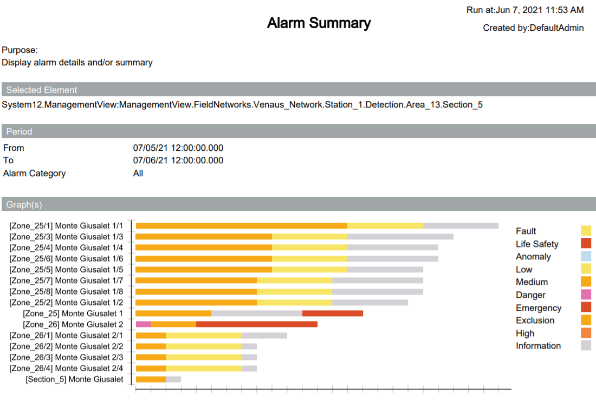
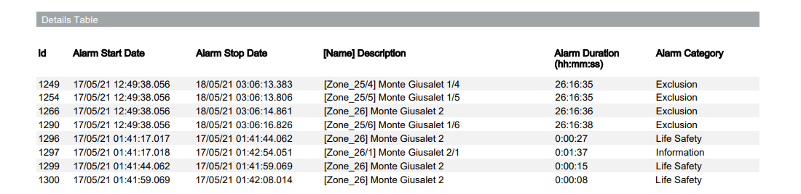
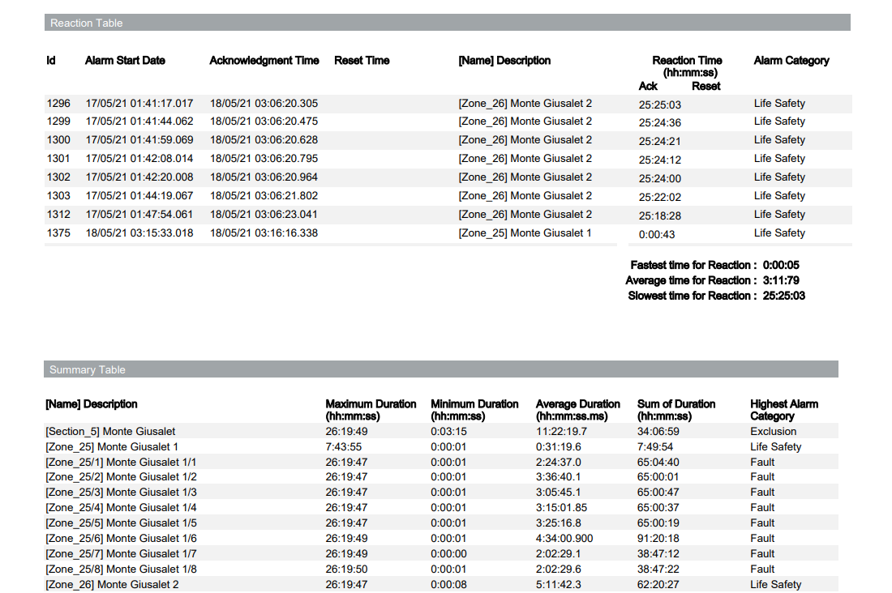
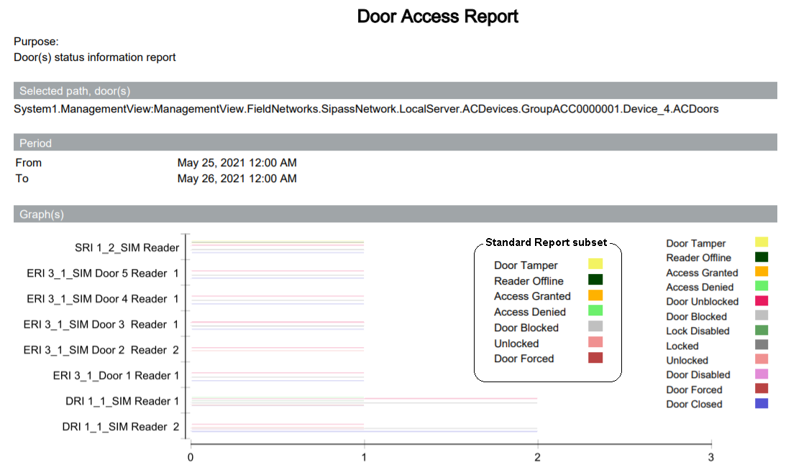
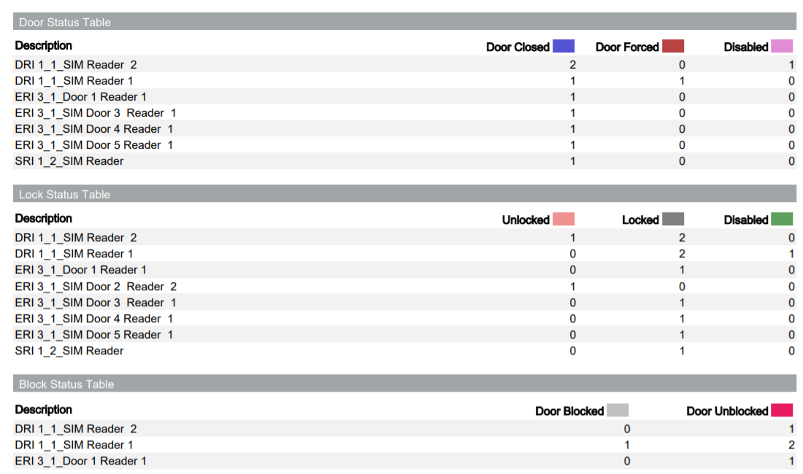
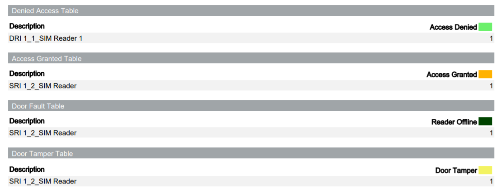

DMS Advanced Reporting Examples
This section provides some examples of DMS Advanced Reports applications.
Alarm Summary Report Example
The following images show the content of the PDF export of a typical Alarm Summary report.
The report is organized in multiple sections that provide:
- The selected target objects, for example a fire zone and the associated fire detectors.
- The selected time period and event categories.
- An histogram graph showing the number of occurred events.
- A detailed table of the event occurrences and timing.
- A reaction table, when applicable, with the operator’s acknowledgement timing.
- A summary table with statistical information.



Door Access Report Example
The following images show the content of the PDF export of a typical Door Access report.
The report is organized in multiple sections that provide:
- The selected target objects, for example a set of doors.
- The selected time period.
- An histogram graph showing the number of occurred events.
NOTE: A Standard Door Access report and an Advanced Door Access report can be started.
The advanced report provides a larger set of door events - The detailed status table for each type of event.


